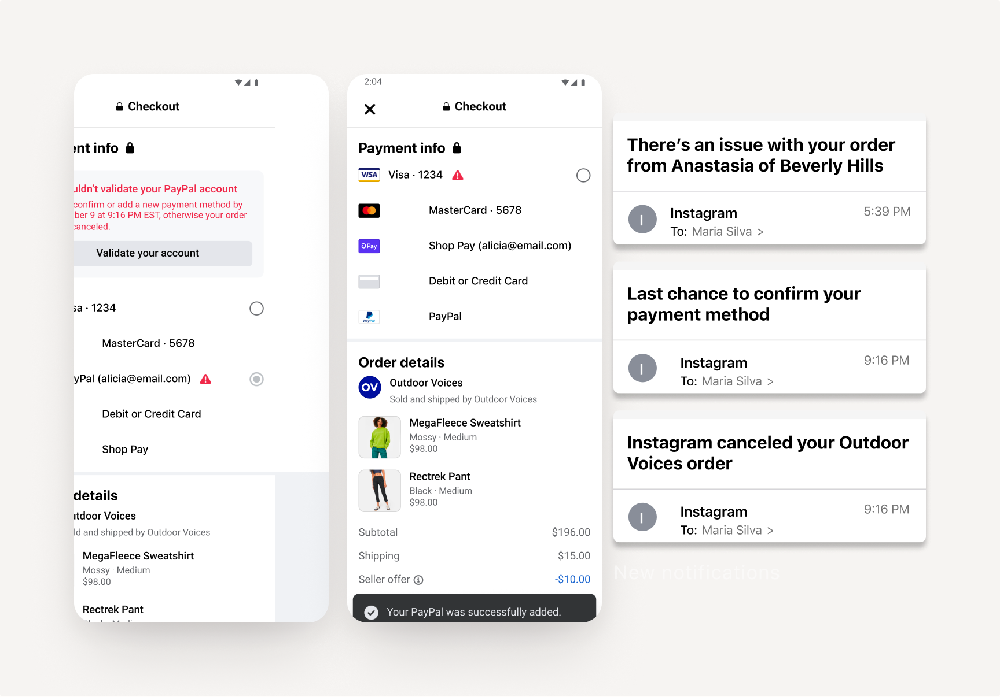

Updating a critical flow to prevent order cancellations
When a payment failed after a successful order, few buyers came back to fix it, and the sale was lost. We gave buyers more time to fix their payment, added email and text nudges, and redesigned the entire flow with more specific guidance.

I did an extensive audit of the flow, and made updating payment easier with small improvements: pre-filled fields, contextual copy, clearer color and icons.
More completed transactions, and higher gross merchandise value.